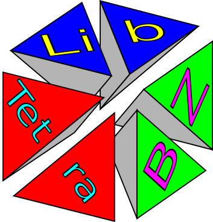

日本語
English
LibTetraBZ
固体中の電子状態計算においてBrillouin Zone積分を効率的に行うテトラへドロン法を
任意のコードに実装するためのライブラリ群です。



引用につきまして
libtetrabzを使った研究におきまして, 下記の論文を適宜引用していただけましたら幸いです.
"Improved tetrahedron method for the Brillouin-zone integration applicable to response functions",
M. Kawamura, Y. Gohda, and S. Tsuneyuki, Phys. Rev. B 89, 094515 (2014).
arXiv:2203.15648
News
-
2019/3/31 pythonパッケージ LibTetraBZ
-
2019/4/14 Abinit includes LibTetraBZ.
第一原理プログラムパッケージ
Abinit
にLibTetraBZが組み込まれました.
-
2017/7/7 libtetrabz-2.0.0 is released
-
2016/4/15 RSDFT ver. 1.3.0 に LibTetraBZ が組み込まれました.
密度汎関数理論および実空間差分法による第一原理プログラムパッケージ
RSDFT
にLibTetraBZが組み込まれました.
Download
Python package in PyPI
Manual in English(
HTML/
PDF)
Python API manual
フォーラム